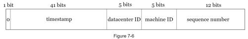
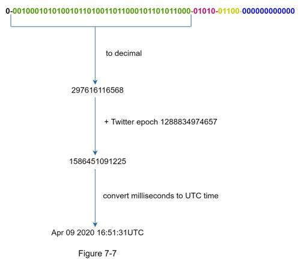

In the high-level design, we discussed various options to design a unique ID generator in distributed systems. We settle on an approach that is based on the Twitter snowflake ID generator. Let us dive deep into the design. To refresh our memory, the design diagram is relisted below.

Datacenter IDs and machine IDs are chosen at the startup time, generally fixed once the system is up running. Any changes in datacenter IDs and machine IDs require careful review since an accidental change in those values can lead to ID conflicts. Timestamp and sequence numbers are generated when the ID generator is running.
Timestamp
The most important 41 bits make up the timestamp section. As timestamps grow with time, IDs are sortable by time. Figure 7-7 shows an example of how binary representation is converted to UTC. You can also convert UTC back to binary representation using a similar method.

The maximum timestamp that can be represented in 41 bits is
2 ^ 41 - 1 = 2199023255551 milliseconds (ms), which gives us: ~ 69 years =
2199023255551 ms / 1000 seconds / 365 days / 24 hours/ 3600 seconds. This means the ID generator will work for 69 years and having a custom epoch time close to today’s date delays the overflow time. After 69 years, we will need a new epoch time or adopt other techniques to migrate IDs.
Sequence number
Sequence number is 12 bits, which give us 2 ^ 12 = 4096 combinations. This field is 0 unless more than one ID is generated in a millisecond on the same server. In theory, a machine can support a maximum of 4096 new IDs per millisecond.